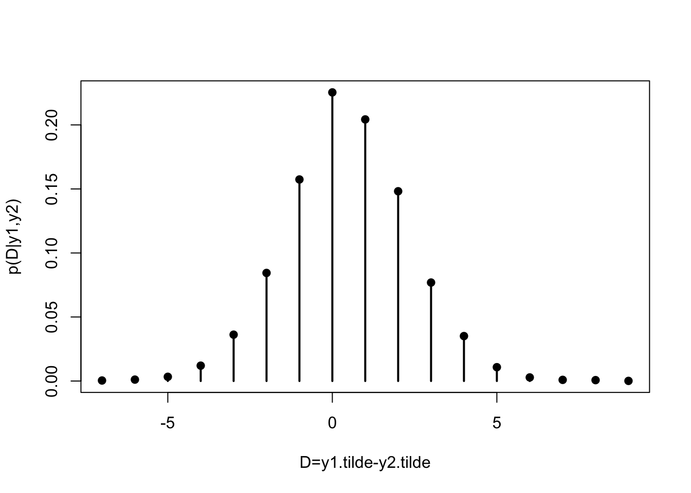

Lecture 8 Predictive
The following notes are transcribed from Neath(0511,2021) lecture which summarizes Sections(4.3 and 4.4) of Hoff(2009).
Last class, we talked about using simulated draws \(\theta^{(s)} \sim p(\theta | y)\) to form a Monte Carlo approximation to the posterior distribution \(p(\theta | y)\).
Today we do Monte Carlo simulation for the posterior predictive dist!. A predictive dist is characterized by two features: (1) known quantities are conditioned on (2) unknown quantities are integrated out. For example, if we integrate \(\theta\) out of this \(\int{ p(\tilde y | \theta) p(\theta ) d\theta } = p(\tilde y)\), we call this a prior predictive distribution. A result of probability theory: If the sampling model is Poisson\((\theta)\) and the prior is \(\theta \sim \text{gamma}(a, b)\) then the prior predictive is NegBinom\((a, b)\); an overdispersed count dist. The Poisson dist has the property that Var\((Y) = E(Y)\). For a NegBinom Var\((Y) > E(Y)\). A predictive dist that accounts for the information available in the sample data \((y_1, …, y_n) = y\) is called a posterior predictive dist and in the Poisson-gamma model, because the gamma is a conjugate for the poisson and the posterior on \(\theta\) is \(\text{gamma}(a+ \sum{y_i},b + n)\) the posterior predictive dist(PPD) for an \((n+1)\)st observation is NegBinom\((a + \sum{y_i}, b + n)\). R has dnbinom, pnbinom, rnbinom functions. So we don’t need to do Monte Carlo for the PPD any more than we need to for approximating the posterior of \(\theta\) but we’re gonna anyway because it’s educational.
Note: When I say “Poisson-gamma model” or I may say “gamma-Poisson model” that’s a shorthand for “The Bayesian statistical model where our data consists of exchangeable observations of conditionally independent Poissons with rate \(\theta\) where the prior dist on \(\theta\) is gamma\((a, b)\)”
8.1 Sampling for predictive distribution
Often, not only does the PPD not have a nice closed form but it’s also not even so straightforward to sample from. But we can still do Monte Carlo for predictive dists!
Proposition: If \(\theta^{(s)} \sim p(\theta | y)\) and \(y^{(s)} \sim p(y | \theta^{(s)})\) then I should say \(\tilde y^{(s)} \sim p(\tilde y | \theta^{(s)})\) then jointly \((\theta^{(s)}, \tilde y^{(s)}) \sim p(\theta | y) \times p(\tilde y | \theta) = p(\theta, \tilde y | y)\) the joint dist of \(\theta \text{ and } \tilde Y\). In general if \(X_1, X_2 \sim f(x_1, x_2)\) then \(X_2\) is a draw from the marginal of \(X_2.\)
Let’s return to the birthrates example. Our posterior for \(\theta_1\) and \(\theta_2\) were independent \(\theta_1 | y \sim\) gamma(219, 112) \(\theta_2 | y \sim\) gamma(68, 45). Suppose we want the posterior predictive prob \(Pr(\tilde Y_1 > \tilde Y_2 |\) data) \(\tilde Y_1 =\) number of children for a randomly selected 40-year-old woman with less than bachelor’s. \(\tilde Y_2 =\) number of children for a randomly selected woman with bachelor’s or higher.
\[ \begin{aligned} \operatorname{Pr}\left(\tilde{Y}_{1}\right.&\left.>\tilde{Y}_{2} \mid\left\{y_{i,j}\right\}\right)=\sum_{\tilde y_{1}=0}^{\infty} \sum_{\tilde y_{2}=0}^{\tilde y_{1}-1} \operatorname{Pr}\left(\tilde{Y}_{1}=y_{1}, \tilde{Y}_{2}=y_{2} \mid\left\{y_{i,j}\right\}\right) \\ &=\sum_{\tilde y_{1}=0}^{\infty} \texttt {pnbinom}\left(\tilde y_{1}-1 \mid 68,45\right) \times \texttt {dnbinom}\left(\tilde y_{1} \mid 219,112\right) \end{aligned} \]
If I did pnbinom\((y_1)\) in the last line that’d be right for \(\tilde Y_2 \le \tilde Y_1.\) I want \(\tilde Y_2 < \tilde Y_1.\)
y1.tilde <- 0:100
sum( pnbinom(y1.tilde-1, size=68, mu=68/45)*
dnbinom(y1.tilde, size=219, mu=219/112) )## [1] 0.4820895wait a second weren’t we thinking number of children for no college < number of children for college grads shouldn’t this prob be > 0.5? Not really. What is \(Pr(\tilde Y_1 < \tilde Y_2)?\) It will also be less than 0.5 and in fact will be less than .48 (0.3 to be exact). Remember we’re talking about a discrete dist. Randomly select a women with less than bachelor’s degree and a woman with bachelor’s or higher there’s a decent chance they have the SAME number of kids.
# Pr(Y1 tilde >= Y2 tilde )
sum( pnbinom(y1.tilde, size=68, mu=68/45)*
dnbinom(y1.tilde, size=219, mu=219/112) )## [1] 0.6997647
Here we could do Monte Carlo simulations using the rnbinom function. Or we could do rgamma and rpois. They are both correct the longer way generalizes to more complicated problems where the PPD may not be tractable.
rgamma(3, 1, 1), I get 3 draws from a gamma(1,1) dist.rpois(10, 5), I get 10 draws from a Poisson(5)rpois(10, 6:15), I get one Poisson(6) draw one Poisson(7) draw one Poisson(8) … one Poisson(15) draw
These \(\tilde y\)’s are Poisson variables but each with a different mean and since the Poisson means are gamma-distributed the \(\tilde y\) will be negative binomially distributed.
# Birth rates example # Posterior predictive simulations
a <- 2 ; b <- 1;
n1 <- 111; sum.y1 <- 217;
n2 <- 44 ; sum.y2 <- 66;
theta1.sim <- rgamma(10000, a+sum.y1, b+n1)
theta2.sim <- rgamma(10000, a+sum.y2, b+n2)
y1.tilde <- rpois(10000, theta1.sim)
y2.tilde <- rpois(10000, theta2.sim)## [1] 0.2254 0.4798So indeed these conclusions are consistent with women without bachelors having more kids on average than women with bachelors.
Here’s an important thing: Given a Monte Carlo sample from a prob dist, I can compute (approximations to / estimates of) any feature of that dist that interests me. E.g., moments (means, variance, etc) probabilities, quantiles. That holds for posterior predictive dists as well as posterior dists.
8.2 Example: Let \(D = \tilde Y_1 - \tilde Y_2\)
What does \(D\) mean exactly? It means this: Randomly select a 40-year-old woman with less than bachelor’s and a 40-year-old woman with bachelors or higher \(D =\) number of kids first woman has minus number of kids second woman has. It’s a difference between two negative binomial dist(indep NegBinom’s). I don’t know anything about the properties of such a distribution (it doesn’t matter, I don’t need to know). We can use our samples of \(\tilde y_1 \text{ and } \tilde y_2\) to construct the predictive (posterior predictive dist) of this difference \(D\)!
## [1] -7 9## [1] -7 -6 -5 -4 -3 -2 -1 0 1 2 3 4 5 6 7 8 9ppd.D <- (table(c(D.tilde, D.vals))-1) / length(D.tilde)
plot(D.vals, as.vector(ppd.D), type="h", lwd=2,
xlab="D=y1.tilde-y2.tilde", ylab="p(D|y1,y2)")
points(D.vals, as.vector(ppd.D), pch=19)
This weird business with the (table(c(D.tilde, D.vals))-1) is there because the table function doesn’t count missing values.
## x
## 1 2 3 5 6 8
## 3 3 3 1 1 1If we are making a histogram we would want it to show that we have zero fours.. hence the weird business.
The most frequently occurring value is 0 the next most frequent is +1. The non-college-grad has 1 more kid than the college grad. This plot would have been hard to do any way other than by Monte Carlo.
8.3 Posterior predictive model checking
What we’ve done so far is assumed number of kids | \(\theta\) are indep Poisson.
Here’s a question: Number of kids is not a Poisson variable. The Poisson dist counts events in a Poisson process which occur randomly and independently of each other. That is not how people have kids at all. Why did we use it? The answer is: because number of kids is a count variable and the Poisson dist is a simple model for count variables. You know the most famous quote in statistics? “All models are wrong, some models are useful”.
The question is: Is it useful even though it’s wrong? Posterior predictive simulations are a good tool for addressing this question.
Student question: I thought that Poisson was a good distribution for rare events..? Ans: It is. But not only rare events \(Y \sim \text{Poisson}(\theta).\) No rule against \(\theta\) being a big number \(\theta =\) expected count “rare events” means prob is low but if exposure is high then expected number of counts can high as well.
Additional notes:
Sample quantiles approximate true posterior quantiles. For example, \(S = 1000\) Define \(\theta^{(1)} \le \theta^{(2)} \le … \le \theta^{(S)}\). Take the 25th one and the 975th one and that’s an approximate 95% posterior interval.
8.4 Posterior predictive model checking for group
Let’s take the first group for illustration(less than bachelor’s degree). This is actually the first time we’ve seen these data cuz all we needed was sufficient statistic \((n = 111,~ \sum{y_i} = 217)\). Take each of these counts divided by 111 that defines the empirical distribution. The idea of “posterior predictive model checking” is; if the model is “correct” then the observed data should not appear unusual when compared to the posterior predictive distribution. \(p(\tilde y | y)\) is the conditional dist of number of chidren conditional on the observed data. If the data really were drawn from the model that we used the empirical dist and the PPD should show close agreement.
# Posterior predictive model checking for group 1
y <- 0:10
e.dist <- c(20,19,38,20,10,2,2,rep(0,length(y)-7)) / 111
plot(y-.05, e.dist, type="h", lwd=5, xlab="y", ylab="Pr(Y=y)")
a <- 2; b <- 1; n <- 111; sum.y <- 217;
p.dist <- dnbinom(y, size=a+sum.y, mu=(a+sum.y)/(b+n))
points(y+.05, p.dist, type="h", lwd=5, col="gray")
legend("topright", inset=.1, lwd=5, col=c("black","gray"),
legend=c("Empirical dist", "Predictive dist")) Should we be concerned about this? First, is it really a disagreement? There are two possible answers:
- It is a result of sampling variability.
- It is indeed a feature of the populations. Our model is wrong.
The answer is based on frequentist hypothesis testing. We will simulate \(S\) replicated data sets (Remember \(S\) is a big number). For each \(\theta^{(s)} \sim p(\theta | y).\) And for each replicated data set compute the test statistic. What test statistic to use? Whatever feature of the data you supsect the model is not capturing correctly. In this case we use \(t(y_{obs}) = 38 / 19 = 2.0\), What does the posterior predictive dist of this test statistic look like? and how unusual a value is 2.0? For each sample from the posterior, \(\theta^{(s)} \sim p(\theta | y)\) simulate a “replicated” data set from \(p(y | \theta^{(s)}) =\)
# Define the test statistic t = #{y_i = 2} / #{y_i = 1}
t.sim <- rep(NA, 10000)
for(s in 1:10000)
{
theta.sim <- rgamma(1, a+sum.y, b+n)
y.tilde <- rpois(n, theta.sim)
t.sim[s] <- sum(y.tilde==2) / sum(y.tilde==1)
} How often in these replicated(simulated) data sets does it happen that there are double the number of cases with \(y=2\) as with \(y=1?\) The answer is not very often. The observed test statistic \(t(y_{obs}) = 2.0\)
is kind of out in the tail of this dist.
How often in these replicated(simulated) data sets does it happen that there are double the number of cases with \(y=2\) as with \(y=1?\) The answer is not very often. The observed test statistic \(t(y_{obs}) = 2.0\)
is kind of out in the tail of this dist.
## [1] 0.0059This quantity 0.0051 that’s the tail probability. This value is called a “Bayesian p-value”. This “Bayesian p-value” has nothing to do with Bayesian inference it’s strictly a tool in Bayesian model checking.
We did the posterior predictive checks we found Bayesian p-value = .005 (close to zero) Based on this which bullet is right one? It’s the second one! If this was to be expected due to sampling variability then it would have occurred with some frequency among the replicated data sets. But it didn’t! So this feature of the data “\(y=2\) with much greater frequency than \(y=1\)” is not explained by the model. So the conclusion is; This is indeed a deficiency of the Poisson model; To the extent that there our features of our data set that are not shared by the replicated data sets this MAY suggest a problem.
We’re still back to the original question. How concerned should we be? Is predicting frequency of one kid and two kids an important goal of our inference? If yes, then we’ve got a problem because the Poisson model is not going to give accurate predictions here. It will underpredict the frequency of \(y=2\) and overpredict the frequency of \(y=1\). However if what we really care about is estimation of mean and variance of “# of kids” then this is not such a problem.
So in terms of what’s the next step in this data analysis? The answer is: it depends.
Thus endeth our discussion of Chapter 4. On to the next thing Chapter 5.